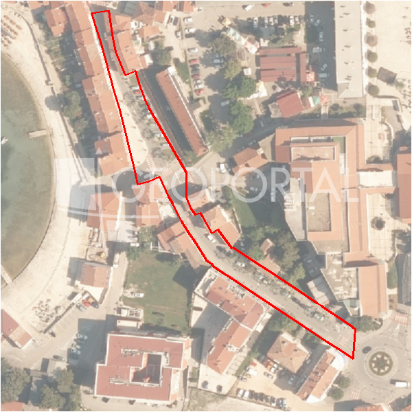

#42902 · Prodaje se građevinsko zemljište 2718 m² u Murinama
Murine, Umag, Istarska · zemljiste · njuskalo · status active · oglas ↗
Ocjena
- Score
- 64 rule 64 · LLM – · 12.09.2026.
- RLV
- 1,74 M€ (673 €/m²) · ratio 13,91
- Ukupna investicija
- 4,89 M€
- GBP
- 1.860 m²
- Feedback
- –
- CRM
- –
Sažetak: Prodaje se građevinsko zemljište od 2718 m² u Murinama (Umag), namijenjeno gospodarsko-proizvodnoj djelatnosti prema prostornom planu. Ključni rizik je što oglas navodi da se samo dio parcele nalazi unutar građevinskog područja, pa je potrebno provjeriti stvarnu gradivu površinu.
Oglas
- Cijena
- 125.000 € (46 €/m²)
- Površina
- 2.718 m² · DKP 2.583 m² (odstupanje -5,0 %)
- Prodavatelj
- agencija · Licencirana agencija za prodaju nekretnina ALMA DOM
- Prvi put
- 11.09.2026. · zadnje 11.09.2026. · 0 d na tržištu
Povijest cijene
| Datum | Cijena |
|---|---|
| 11.09.2026. | 125.000 € |
Flagovi
zop_70_100 ZOP pojas 70/100 m (−10)zone_uncertainty zona nije pregledana (reviewed: false) (−5)
parcelacija fazni projekt / parcelacija
zona_iz_oglasa zona preuzeta iz teksta oglasa (bez GIS-a)
llm_pending LLM ekstrakcija/ocjena nedostupna
Komponente score-a
| rlv | {'gbp': 1859.7528, 'kis': 0.8, 'nkp': 1394.8146, 'noi': None, 'rlv': 1738262.4268695656, 'ratio': 13.906099414956525, 'value': None, 'phases': 2, 'profile': 'obala_visestambeno', 'gdv_neto': 7810961.76, 'cost_soft': 371950.56000000006, 'gdv_bruto': 9763702.2, 'kis_known': False, 'total_inv': 4893467.1680000005, 'cost_build': 3719505.6, 'cost_other': 669511.008, 'cost_sales': 292911.066, 'demolition': False, 'gbp_source': 'kis', 'rlv_per_m2': 672.9652173913046, 'parcel_area': 2582.99, 'parcelation': True, 'roi_on_cost': 0.536344361961396, 'profit_at_ask': 2624583.5259999996, 'cost_demolition': 0.0, 'total_inv_phase': 2512983.5840000003, 'parcel_area_effective': 2324.691, 'sale_price_per_m2_nkp': 7000.0} |
| hard | [] |
| info | ['parcelacija', 'zona_iz_oglasa', 'llm_pending'] |
| rubric | {'permits': {'max': 5.0, 'detail': {'permit': 'none'}, 'points': 0.0}, 'location': {'max': 15.0, 'detail': {'source': 'rlv.yaml:istra_zapad/row1', 'sale_price_per_m2_nkp': 7000.0}, 'points': 15.0}, 'physical': {'max': 4.0, 'detail': {'slope_pct': 9.74, 'road_access': 'yes', 'slope_points': 2.0, 'sea_row1_bonus': True}, 'points': 4.0}, 'liquidity': {'max': 3.0, 'detail': {'n_cuts': 0, 'points_cut': 0.0, 'points_days': 0.008333333333333333, 'seller_type': 'agencija', 'points_fresh': 0.5, 'price_cut_pct': None, 'days_on_market': 1, 'points_private': 0}, 'points': 0.51}, 'rlv_ratio': {'max': 25.0, 'detail': {'rlv': 1738262, 'ratio': 13.906, 'asking_price': 125000.0}, 'points': 25.0}, 'ticket_fit': {'max': 10.0, 'detail': {'asking_price': 125000.0}, 'points': 3.67}, 'zone_quality': {'max': 8.0, 'detail': {'source': 'oglas', 'zone_ok': True, 'zone_class': 'poslovno'}, 'points': 1.0}, 'profit_potential': {'max': 20.0, 'detail': {'roi_on_cost': 0.536, 'profit_at_ask': 2624584}, 'points': 20.0}, 'price_vs_benchmark': {'max': 10.0, 'detail': {'source': 'auto:Umag', 'deviation': 0.804, 'ask_eur_m2': 46, 'benchmark_eur_m2': 234.25}, 'points': 10.0}} |
| weights | {'llm': 0.4, 'rule': 0.6, 'model': 0.0} |
| penalties | {'zop_70_100': 10, 'zone_uncertainty': 5} |
| raw_score | 79,2 |
| rlv_notes | ['parcelacija: > 2500 m² → fazni projekt, −10 % površine, +5 % soft', 'fazni projekt: 2 faze; investicija prve faze 2,512,984 €'] |
| flag_notes | {'phases': 2, 'max_gbp': 1860, 'zop_band': '70', 'total_inv': 4893467, 'zone_code': 'gospodarsko-proizvodna namjena', 'zone_class': 'poslovno', 'zone_source': 'oglas', 'zone_reviewed': None, 'total_inv_phase': 2512984} |
| caps_applied | [] |
GIS
- Čestica
- k.o. 302023, k.č. 2466 (pin_buffer, 0,78); k.o. 302023, k.č. 2499 (pin_buffer, 0,73); k.o. 302023, k.č. 2488/1 (pin_buffer, 0,71)
- Zona
- gospodarsko-proizvodna namjena (–)
- kig / kis / katnost
- – / – / –
- GP / UPU
- – · UPU –
- Pristup / nagib
- yes · 9,7 % (max 21,9 %)
- More
- 22 m · red 1 · ZOP 70
- Zaštite
- Natura ne · zaštićeno ne · kulturno dobro ne
- Zgrade na čestici
- 0 %
- Match
- 0,78
Karta
Ortofoto (DOF)

RLV kalkulacija — pretpostavke
| gbp | {'value': 1859.7528, 'source': 'kis'} |
| kis | {'value': 0.8, 'source': 'default_profila'} |
| sea_row | {'value': '1', 'source': 'gis'} |
| soft_pct | {'value': 0.1, 'source': 'profil+parcelacija'} |
| nkp_ratio | {'value': 0.75, 'source': 'profil'} |
| cost_other | {'value': 669511.008, 'source': 'profil: doprinosi+uređenje po m² GBP, financiranje+rezerva % gradnje'} |
| parcel_area | {'value': 2582.99, 'source': 'dkp'} |
| asking_price | {'value': 125000.0, 'source': 'oglas'} |
| margin_on_cost | {'value': 0.15, 'source': 'profil'} |
| build_cost_per_m2_gbp | {'value': 2000.0, 'source': 'profil'} |
| sale_price_per_m2_nkp | {'value': 7000.0, 'source': 'rlv.yaml:istra_zapad/row1'} |
| transfer_tax_and_acquisition | {'value': 0.06, 'source': 'profil'} |
Ekstrakcija iz oglasa
| permit | none |
| zone_claim | gospodarsko-proizvodna namjena |
| red_phrases | ['dio parcele nalazi se unutar građevinskog područja gospodarsko-proizvodne namjene'] |
| sea_row_claim | none |
| building_on_parcel | none |
Benchmarks mikrolokacije
| Vrsta | Vrijednost | n | Od | Izvor |
|---|---|---|---|---|
| land_ask_eur_m2 | 234 | 99 | 11.09.2026. | auto |
Opis oglasa
Na prodaju građevinsko zemljište ukupne površine 2718 m² u Murinama. Prema prostornom planu, dio parcele nalazi se unutar građevinskog područja gospodarsko-proizvodne namjene, što ovu nekretninu čini izuzetno atraktivnom za investiciju. Zemljište je pogodno za poslovnu i industrijsku izgradnju te pruža velik potencijal rasta vrijednosti u budućnosti. Idealna prilika za investitore i poduzetnike koji traže zemljište s jasnom perspektivom razvoja i mogućnošću realizacije poslovnih projekata. Za više informacija i razgledavanje kontaktirajte: Azra +385 91 611 5706 +385 98 420 885 azra@almadominvest.com